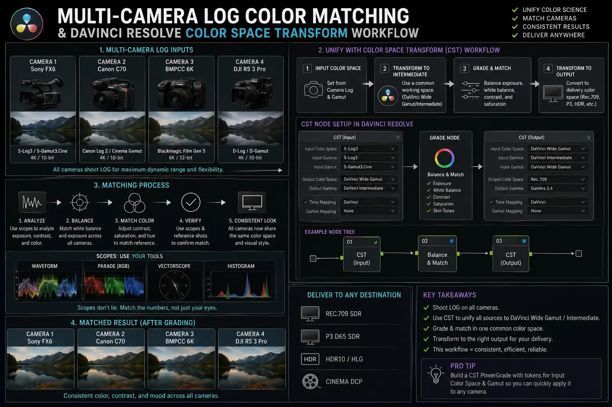
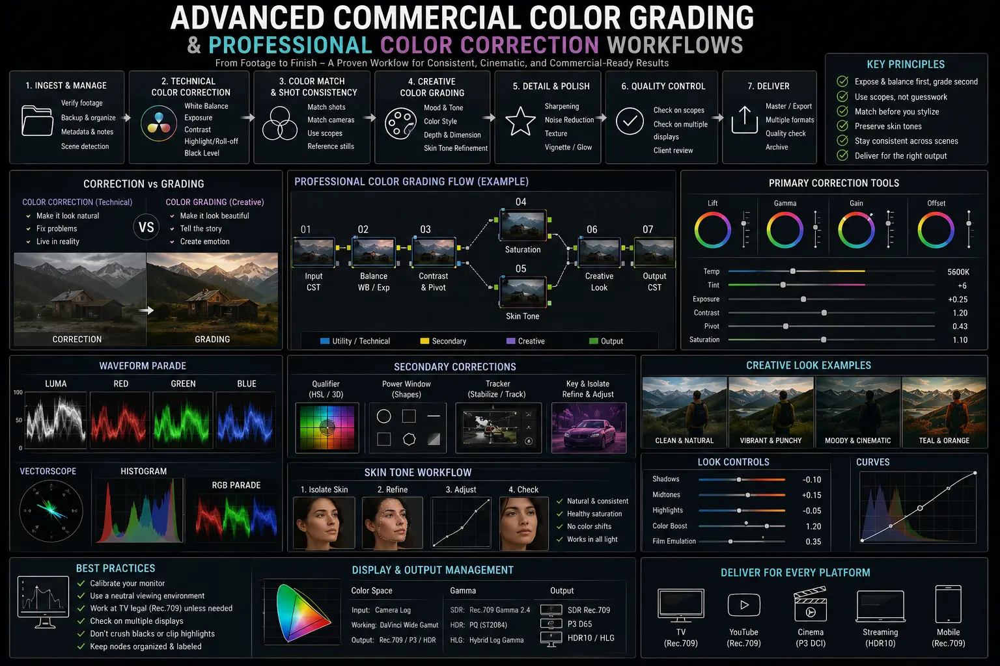

Matching Mixed Camera Log Profiles in Post-Production for a Seamless Finish
The Reality of Mixed-Camera Production Timelines
Modern commercial video production rarely relies on a single camera body across an entire shoot. High-budget brand commercials, multi-angle executive interviews, corporate documentaries, and large-scale live events regularly employ multi-camera rigs to maximize coverage and capture dynamic perspectives. A primary cinema camera (such as an ARRI Alexa or RED V-Raptor) might be paired with agile B-cameras (such as a Sony FX6 or FX9), C-cameras for gimbal work (like a Canon C70 or R5C), and specialty drone assets. While this multi-camera strategy accelerates production velocity on set, it introduces a severe technical bottleneck in post-production: color grading mixed camera timelines.
Every camera manufacturer designs its sensors with proprietary debayering algorithms, color filter arrays (CFAs), logarithmic gamma curves, and gamut spaces. When a Sony FX6 recording in S-Log3 / S-Gamut3.Cine cuts directly to a Canon C70 recording in C-Log2 / Cinema Gamut, the visual disparity is jarring. Sony sensors natively render midtones with a cooler, cyan-magenta bias, whereas Canon sensors emphasize warm, reddish-yellow hues. Without a structured framework for Multi-Camera Log Color Matching, viewers immediately notice the shift in skin tones, contrast ratios, and color saturation across scene cuts. This visual inconsistency undermines brand credibility and signals amateur execution.
Achieving a broadcast-grade, seamless finish demands Advanced Commercial Color Grading anchored by rigorous color science. Rather than attempting to manually stretch and twist color wheels shot by shot, professional colorists rely on mathematical color management, precise Color Space Transformation techniques, and standardized professional color correction workflows. By unifying disparate log profiles into a single wide-gamut working space before applying creative looks, production teams can guarantee perfect continuity across every frame.
Deconstructing Sensor and Log Gamma Disparities
To solve the challenge of color grading mixed camera timelines, one must first understand why different camera log profiles behave so radically differently. A logarithmic gamma curve is designed to compress a sensor's wide dynamic range into a manageable digital file format. However, because dynamic range distribution differs between camera brands, the logarithmic curve allocates data differently across shadows, midtones, and highlights.
Consider the technical nuances encountered when Matching Sony and Canon log footage:
- Sony S-Log3 / S-Gamut3.Cine: S-Log3 is engineered to closely mirror traditional Cineon film logarithmic curves. It distributes exposure bits evenly across the midtone and shadow regions, offering extreme shadow recovery potential. However, S-Gamut3.Cine pushes greens and cyans into a very wide primary triangle, which often results in a slightly desaturated, cool appearance prior to color transformation.
- Canon C-Log2 / Cinema Gamut: C-Log2 provides maximum dynamic range (often 15+ stops) by aggressively compressing shadow detail while preserving expansive highlight headroom. Canon's Cinema Gamut prioritizes human complexion warmth, naturally lifting red and yellow color channels. When unmanaged, C-Log2 appears significantly contrast-rich and warm compared to S-Log3.
- RED IPP2 & ARRI LogC3/LogC4: ARRI LogC4 offers an exceptionally wide gamut (LogAWG4) with ultra-smooth highlight rolloff, while RED IPP2 utilizes REDWideGamutRGB. Blending these elite cinema gamuts with mirrorless or compact cinema log profiles requires precise mathematical conversion to prevent color clipping and gamut compression artifacts.
Attempting Matching Sony and Canon log footage by applying generic vendor Look-Up Tables (LUTs) directly to clips on the edit timeline is a fundamental misstep. Standard Rec.709 LUTs are hardcoded mathematical formulas designed for specific exposure baselines. If a shot is slightly under or overexposed, a technical LUT will crush shadows or clip highlights permanently, rendering downstream skin tone matching virtually impossible.
Color Management: CST Nodes vs. ACES Color Pipelines
The modern standard for resolving multi-camera log discrepancies relies on color-managed post-production environments. Rather than grading in unmanaged display-referred spaces, professional colorists utilize scene-referred workflows in applications like Blackmagic Design DaVinci Resolve. The two primary methods are Color Space Transform (CST) node architectures and the Academy Color Encoding System (ACES).
Implementing a DaVinci Resolve color space transform workflow gives colorists total control over each node in the grading tree. By placing a CST plugin at the very beginning of a clip's node graph, the colorist mathematically maps the source footage's exact Input Color Space (e.g., Sony S-Gamut3.Cine) and Input Gamma (S-Log3) into a unified timeline working space, such as DaVinci Wide Gamut / Intermediate (DWG).
Once all incoming camera feeds—whether Sony, Canon, RED, or Panasonic—are mapped into DaVinci Wide Gamut:
- Unified Dynamic Range: Every camera asset responds identically to primary wheel adjustments, exposure lifts, and contrast pivots.
- Standardized Color Math: Saturation and hue shifts behave predictably across all camera angles because the color tools operate inside an ultra-wide working gamut that exceeds human visual perception.
- Non-Destructive Output Mapping: A final DaVinci Resolve color space transform node at the end of the timeline or project level converts the unified DWG working space to the target delivery display profile (such as Rec.709, DCI-P3, or Rec.2020 HDR) with precise tone mapping and gamut mapping algorithms.
Alternatively, an ACES (ACEScc or ACEScct) pipeline uses Input Device Transforms (IDTs) for each camera brand to normalize all footage into the ACES2065-1 color space. Both methods eliminate manual color stretching, laying the technical foundation required for successful Multi-Camera Log Color Matching.
Mathematical Color Normalization
Replaces guesswork with accurate Color Space Transformation algorithms that align different sensor gamuts into a unified working space like DaVinci Wide Gamut.
Flawless Skin Tone Continuity
Guarantees precise skin tone matching across alternating multi-cam cuts, ensuring talent complexions remain natural and uniform regardless of camera brand.
Accelerated Shot Matching
Streamlines professional color correction workflows by establishing standardized exposure and contrast baselines before creative LUT application.
Broadcast-Ready Asset Delivery
Delivers high-ticket Advanced Commercial Color Grading assets ready for broadcast TV, OTT streaming platforms, and premium digital advertising.

Precision Skin Tone Matching on Vectorscopes
Human viewers are hyper-sensitive to changes in skin tone appearance. While an audience might tolerate slight variations in background lighting or wall colors between camera cuts, an inconsistent complexion on the main talent immediately breaks immersion. Therefore, skin tone matching represents the definitive benchmark for successful Multi-Camera Log Color Matching.
When Matching Sony and Canon log footage, colorists cannot rely on uncalibrated computer monitors alone. Accurate matching requires precision visual scope analysis, specifically using the Vectorscope set to 2x zoom with the Skin Tone Indicator line (often referred to as the "I-Line") enabled.
Regardless of ethnicity, human skin tone pigment (melanin and blood flow) falls along a specific vector line between Red and Yellow on the vectorscope. However, different camera sensors scatter chroma trace dots differently around this line:
- Sony Sensor Chroma Characteristics: Sony log files frequently spread skin tone data toward the magenta side of the I-Line. To align Sony skin tones with Canon, colorists use Hue vs Hue curves to selectively rotate magenta-tinted reds toward warm orange, while using Hue vs Saturation curves to clean up excess yellow noise in shadow areas.
- Canon Sensor Chroma Characteristics: Canon log files tend to cluster skin tone trace dots directly on or slightly yellow of the I-Line with rich natural saturation. When matching to Sony, Canon footage may require subtle desaturation in the yellow-red hue vector and minor adjustments to the contrast pivot to match Sony's flatter midtone curve.
Advanced secondary color correction techniques further refine skin tone matching:
1. Power Windows & Qualifiers: Isolating talent faces using circular windows or AI Magic Masks allows targeted luminance and tint adjustments without altering background environment colors.
2. Color Warper Calibration: Using DaVinci Resolve's 2D Grid Color Warper, colorists can grab specific hue/saturation points corresponding to skin highlights or shadows and nudge them into exact alignment across multi-cam angles.
3. Shared Node Structures: Implementing fixed node trees across all clips ensures that secondary adjustments for color grading mixed camera timelines can be copied, pasted, and tweaked systematically across dozens of multi-cam cuts.
Multi-Cam Commercial Shoots
- Aligns primary cinema A-cams with compact B-cam gimbal rigs
- Standardizes corporate color codes across diverse camera angles
- Eliminates color drift during rapid intercut editing sequences
- Protects brand identity and luxury product presentation
Corporate & Executive Interviews
- Delivers uniform skin tone rendering for executive keynotes
- Normalizes mixed venue lighting and color temperatures
- Uses DaVinci Resolve color space transform for fast turnaround
- Enhances broadcast authority for high-ticket corporate assets
High-Ticket Product Advertising
- Matches macro product shots with live-action talent cuts
- Preserves exact product color fidelity across log profiles
- Applies film print emulation seamlessly across mixed timelines
- Elevates perceived production value for conversion-focused ads

Step-by-Step Professional Color Correction Workflow for Mixed Timelines
To execute Advanced Commercial Color Grading efficiently on complex commercial projects, post-production studios follow a structured, multi-pass workflow. Adhering to this step-by-step pipeline guarantees consistent results and avoids redundant adjustments when color grading mixed camera timelines.
Step 1: Project Setup & Technical Color Management
Establish the color management architecture prior to editing or grading. In DaVinci Resolve, configure the color management settings to DaVinci YRGB Color Managed or set up a node-based CST architecture. Verify that footage metadata correctly reflects camera shooting specs (e.g., S-Log3/S-Gamut3.Cine for Sony FX6 clips, C-Log2/CinemaGamut for Canon C70 clips).
Step 2: Primary Exposure and Contrast Matching
Before altering hue or saturation, normalize exposure across all multi-camera angles using the Waveform monitor. Align midtone skin luminance (typically placed between 40 to 45 IRE for log normalization or 50 to 55 IRE in Rec.709 space). Adjust primary Lift, Gamma, and Gain wheels to match black levels and highlight peaks across alternating shots.
Step 3: Primary White Balance & Tint Normalization
Utilize the RGB Parade scope to evaluate white balance integrity. Adjust temperature and tint controls to align red, green, and blue traces in neutral areas of the frame (such as grey cards, white shirts, or neutral backgrounds). Standardizing color temperature across all camera angles removes overall color casts before detailed secondary matching.
Step 4: Color Space Transformation & Primary Matching
Apply individual DaVinci Resolve color space transform nodes to convert each camera's unique log gamma and gamut into the master working space. Once transformed, perform shot-matching passes using split-screen reference views. Match color saturation across key background elements, foliage, and architectural structures.
Step 5: Secondary Skin Tone Matching & Qualifier Refinement
Perform dedicated skin tone matching passes for talent keyframes across all camera angles. Utilize vectorscopes to confirm skin traces sit accurately on the I-Line. Apply subtle secondary Hue vs Hue and Hue vs Saturation node adjustments to eliminate sensor-specific color anomalies when Matching Sony and Canon log footage.
Step 6: Noise Reduction & Spatial Resolution Alignment
Compact camera sensors and higher ISO log captures often exhibit higher noise floors than full-frame cinema bodies. Apply Temporal and Spatial Noise Reduction in DaVinci Resolve Studio to equalize noise profiles. Where necessary, match subtle film grain across all cuts to unify spatial texture.
Step 7: Timeline-Level Creative Grading & Look Application
With all camera feeds mathematically normalized and visually matched, apply creative grading nodes at the Timeline level (or on a Group Post-Clip node tree). Apply custom Look-Up Tables (LUTs), split-toning, or film print emulation looks across the entire edit. Because all underlying clips are perfectly matched, the creative look applies uniformly across every camera angle without breaking color harmony.
Why High-Ticket Video Production Demands Advanced Color Science
In the competitive landscape of modern digital marketing, commercial video assets are judged instantly by executive decision-makers and consumers alike. Inconsistent visual quality—such as a presenter's face turning orange on angle A and pale grey on angle B—subconsciously signals poor attention to detail.
Mastering Multi-Camera Log Color Matching and Color Space Transformation elevates a production from standard video editing to broadcast-grade cinema engineering. Implementing rigorous professional color correction workflows allows agencies and production companies to shoot with flexible, multi-brand camera packages on set without sacrificing post-production consistency.
At The PhD Ads in Madurai, we specialize in high-ticket video production, Advanced Commercial Color Grading, and complete post-production color management for growing enterprises, corporate brands, and commercial campaigns. By combining cutting-edge color science with creative visual storytelling, we ensure every frame of your video content reflects the premium standards of your brand.
Key Topics
Ready to Achieve Seamless Color Matching Across Mixed Camera Timelines?
Partner with The PhD Ads in Madurai for professional post-production, advanced commercial color grading, multi-camera log matching, and broadcast-grade color management that elevates your brand assets.
Email: team@e2o.in